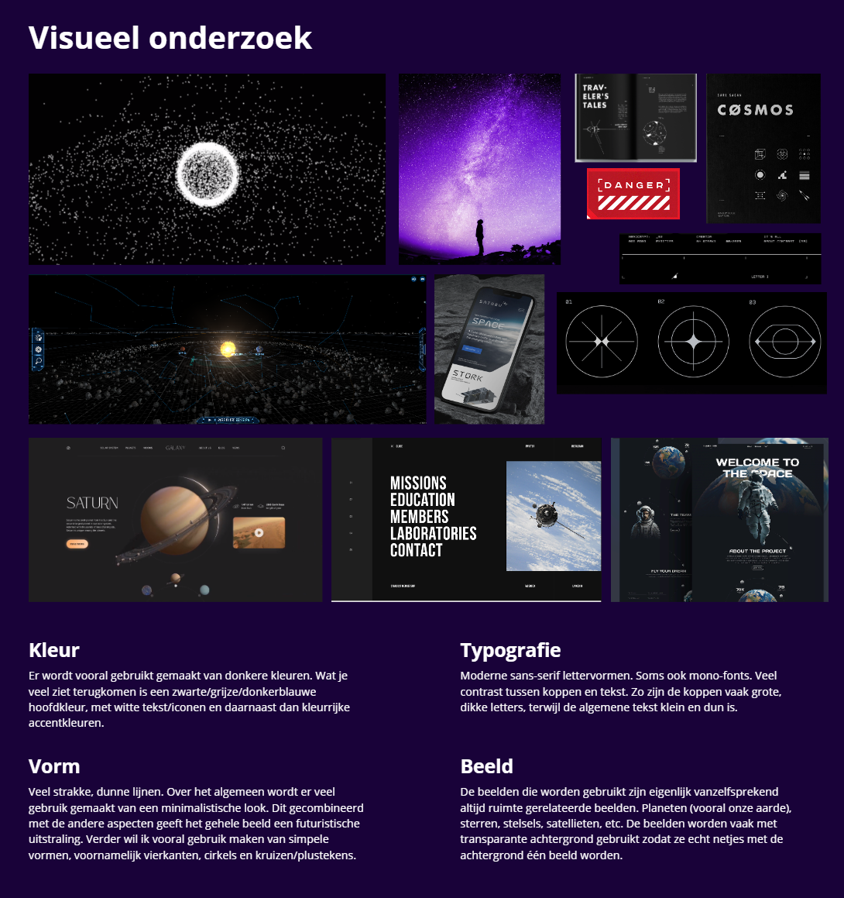
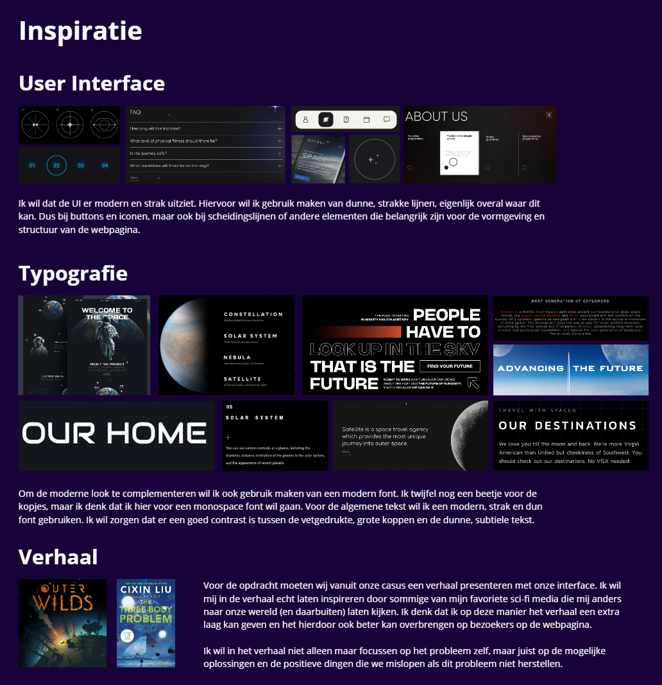

Meesterproef
- Beschrijving
Het werken aan de Meesterproef vond ik enorm leuk. Ik word er altijd al heel blij van als we eigenlijk helemaal zelf mogen kiezen wat we precies willen maken. Dit betekende dat ik weer lekker mocht coderen en daarnaast dat ik een onderwerp kon kiezen wat mij zelf interesseerde. Aangezien ik altijd al gefascineerd ben door de ruimte was dit voor mij een no-brainer en ben ik meteen op zoek gegaan naar artikelen of documentaires rondom dit onderwerp. Al snel vond ik een documentaire over ruimteafval en dit vond ik erg interessant.
Ik ben eerst begonnen met het onderzoek doen naar het onderwerp en daarna heb ik een visueel onderzoek uitgevoerd. Hierbij heb ik gekeken naar onder andere kleur, vormen en typografie. Daarnaast heb ik een inspiratieboard en moodboard gemaakt om mij te helpen tijdens het coderen.
Na een paar eerste schetsen ben ik digitaal verder gegaan in de vorm van coderen. Het was erg leuk om wat meer tijd te hebben voor een codeervak waarbij ik echt kon zorgen dat alles, de content, de visuals en de interactie, perfect zijn. Uiteindelijk komen de visuals, animaties, muziek/geluidseffecten en interactie om een belangrijk verhaal te vertellen.
Hierboven is een video van de gehele website te zien. Hieronder kun je afbeeldingen van de website en het proces terugvinden. Met de button hieronder ga je naar de online versie van de website zelf, let wel op dat de website gemaakt is voor een specifiek schermformaat en dat het dus mogelijk niet bij elke scherm er goed uit ziet.
Website


Proces
 